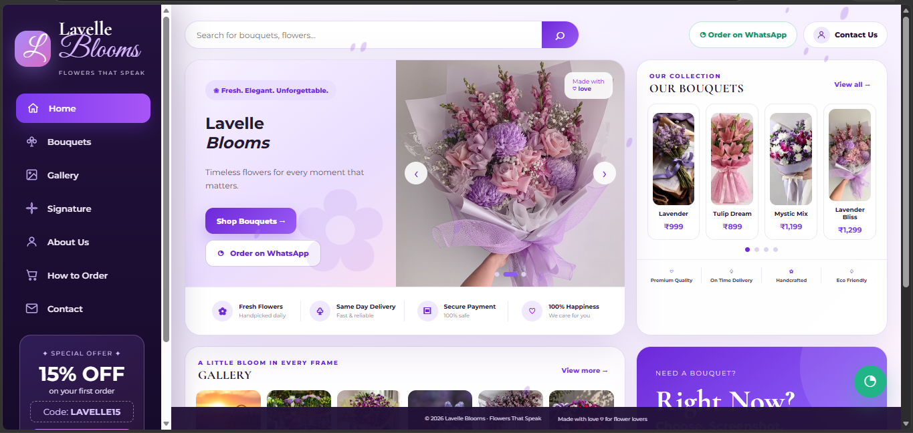
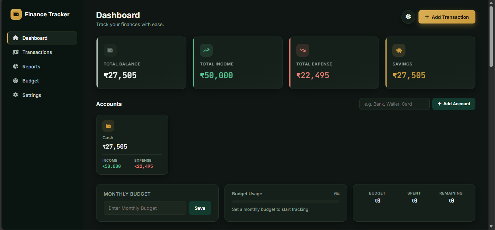
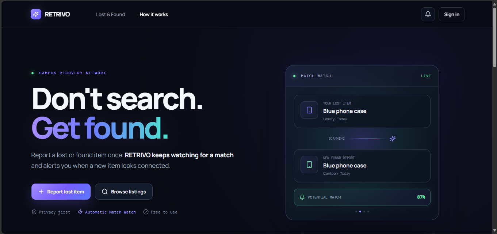

Projects
My Projects

AI-Based Resume Analyzer
Manual resume screening is slow and inconsistent, leaving candidates unsure how well their resume matches a target job description. This web app scores resume-to-JD fit using TF-IDF vectorization and Cosine Similarity, with synonym normalization to catch skills phrased differently.
- PDF/DOCX upload
- Real-time match scoring
- Keyword gap analysis
Built as a submission for a college Best Resume Competition — demonstrates applied NLP concepts in a practical tool.

Restaurant Website
A modern, animated restaurant landing page built as an HTML/CSS mini-project, featuring smooth scroll animations and a clean, visually rich menu layout.

Lavelle Blooms
A modern and elegant flower gifting website built with React, featuring a responsive user interface, beautiful floral collections, and an engaging browsing experience.

Personal Finance Tracker
A user-friendly personal finance tracker designed to help users manage income, record expenses, monitor spending habits, and organize their finances through an intuitive and responsive interface.

RETRIVO – Lost & Found Platform
An AI-powered lost and found platform that helps users report, discover, and recover lost belongings through intelligent item matching, secure authentication, and smart recovery features.